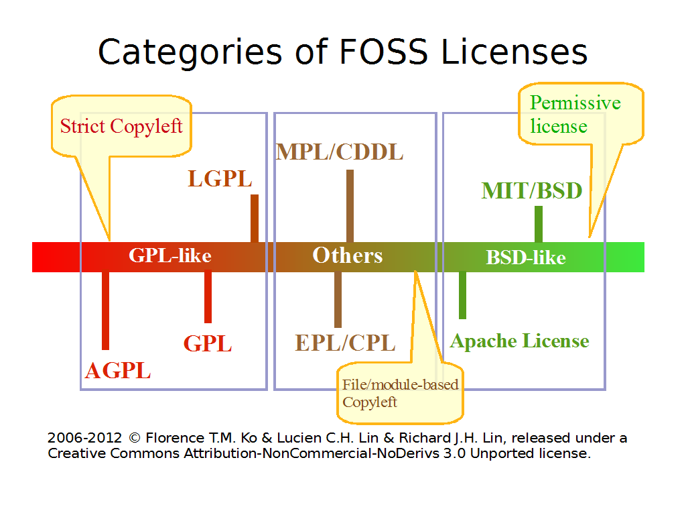

感謝您對「自由軟體鑄造場」的支持與愛護，十多年來「自由軟體鑄造場」受中央研究院支持，並在資訊科學研究所以及資訊科技創新研究中心執行，現已完成階段性的任務。 本網站預計持續維運至 2021年底，網站內容基本上不會再更動。
也紀念我們永遠的朋友 李士傑先生（Shih-Chieh Ilya Li）。
也紀念我們永遠的朋友 李士傑先生（Shih-Chieh Ilya Li）。
法律專欄  自由開源軟體授權條款的三分法
自由開源軟體授權條款的三分法
自由開源軟體授權條款的三分法
建立日期 2007-01-11 04:23 最近更新在 2012-05-14 11:20
既有的自由開源軟體授權條款為數眾多，光是經過開放源碼促進會 (Open Source Initiative, OSI) 核可通過的開源軟體授權條款就超過 50 份，而在自由軟體基金會 (Free Software Foundation, FSF) 網站上，被認定符合四大自由的自由軟體授權條款也超過 60 份，因此對於需要辨識這些授權條款的開發者來說，如果能有一個可以快速檢示授權條款差異的方式或是工具是會很有幫助的。不過到目前為止，在這個領域還沒有一個所謂「可以快速辨識授權條款差異的方法」，所以自由軟體鑄造場 (Open Source Software Foundry, OSSF) 在這樣的狀況下，為使用者開發出了「授權指引」與「授權精靈」（註一）這樣的授權指引工具，如果使用者開發的為原生軟體專案，則可以透過此一網頁程式的操作，在回答幾個問題之後，簡便地挑選到適合使用的自由開源軟體授權條款。不過，如果對於使用者來說，授權精靈所詢問的相關問題若仍還是過於複雜、難以理解，這時候筆者就會用更簡潔的自由開源軟體授權三分法，來解釋不同類型授權條款之間的差異，那就是：「GPL 類別、BSD 類別與其他類別」的分類方式。

▲ 圖1 自由開源軟體授權三分法示意圖
【GPL 類別強調軟體專案無論後續如何散布，使用者都會擁有不受限制的改作與重製散布等自由，不過相對而言、程式的改作者與散布者必須保障後手的改作與散布自由，就是 GPL 類別程式使用者所會受到的最大限制。】
屬於 GPL 類別的授權條款，原則上皆為自由軟體基金會所發布的 GNU 計畫相關授權條款，包括 GPL-2.0、LGPL-2.1、GPL-3.0、LGPL-3.0，與 AGPL-3.0，一般認識上，可以將 GPL 授權條款 (GNU General Public License, GPL) 視為一個基本款，在函式庫程式方面授權拘束性較弱化者有 LGPL (GNU Lesser Public License, LGPL) 授權條款，而在網路應用上將授權拘束性擴大者，則有 AGPL-3.0 (GNU Affero Public License v3) 授權條款。
GPL 類別可以用 GPL-2.0 (GNU General Public License v2.0) 來做基礎解說。GPL-2.0 授權條款的最大特色就是承襲嚴格 Strong Copyleft 的精神（註二），當軟體程式是適用這一類的授權條款時，無論使用者所散布的 GPL-2.0 軟體元件是否經過修改，後續均必須繼續使用 GPL-2.0 來對外授權，並且對於授權規定的內容，程式的改作者與散布者也沒有太大的調整地位。這樣的遊戲規則從法律層面來說，影響較大的會是修改程式之人，因為依照著作權法的預設，當一個軟體程式是改作者依據原作品進行衍生開發時（前提是改作者必須預先取得原著作權利人允許改作的授權），當修改到達一定顯著程度之後，新的衍生作品會被視為一個獨立的新著作來保護，也就是程式的改作人成為新作品獨立的著作權利人，依一般傳統的商業授權模式下，改作者原則上多半會擁有決定新作品日後授權方式的地位，然而 GPL-2.0 的授權機制，是以免授權金便得以取得程式並改作為條件，去「交換」掉 GPL-2.0 程式改作者的此一地位，也就是說、程式可以在不需負擔授權金的前提下得到，然而改作之後的作品，仍然必須以 GPL-2.0 授權條款的方式來對外釋出。GPL-2.0 授權條款如此規定的目的，是希望 GPL 授權程式後續的使用者，可以一直保有取得程式原始碼 (Source Code) 的地位，進而達到世上多數軟體的使用者都有軟體改作權利的目的，這就是推動者所謂「軟體自由 (Software Freedom)」的理念。可以說，這類 GPL 類別的條款，為了實現軟體自由的理念，而以契約訂立的方式，限制了程式改作者後續選擇授權條款的自由。
而因為此類的授權方式只允許改作後的程式，採用原本程式的授權條款，所以在運用上有個很大的特色：那就是與其他帶有 Copyleft 性質的自由開源授權條款彼此互斥。所以說，並不是同樣歸於 GPL 類的自由開源授權方式就是彼此相容的，除了 LGPL-2.1 與 GPL-2.0、LGPL-3.0 與 GPL-3.0、AGPL-3.0 與 GPL-3.0 之間，在條款內容裡預設有彼此相容的除外條款（註三），其餘 GPL 類別的自由開源軟體，彼此之間的程式碼是無法直接結合來運作，甚至可以說是水火不容地互相排斥，例如要將 GPL-2.0 授權的程式碼與 GPL-3.0 授權的程式碼直接融合 (merge) 在一起，就是一個不被條款內容允許的互斥範例。
【BSD 類別著重的是原始專案著作權利人的創作名譽，使用者對於此類授權元件，具有不受任何拘束的改作與重製、散布自由，甚至改作之後的程式原始碼，也不限定一定得依自由開源授權的方式接續散布，但一旦散布的話，必須要保留、彰明原專案權利人的著作權聲明與免責聲明，以及其他個別條款進一步要求的顯名聲明。】
AFL-3.0 (Academic Free License v3.0)、MIT (MIT License)、Apache-1.1 (Apache License 1.1)、Apache-2.0 (Apache License 2.0) 以及 Zlib (zlib License) 等皆屬於 BSD 類別的自由開源軟體授權條款。
與 GPL 類別明顯產生對比的就是 BSD 類授權條款，因為 GPL 類別程式雖然能夠讓使用者自由地修改、重製，散布該程式，但會延伸的拘束到該程式與其衍生作品後續的授權模式，而 BSD 類別的授權規則與此全然不同，BSD 類別授權的程式，無論該程式是否被修改過，使用者再次散布時，都有機會修改該程式後續的授權方式，甚至改採不提供程式原始碼，改收取商業授權金的方式來利用這個程式，只要散布上保留原 BSD 類別專案作者的著作權聲明、免責聲明，以其他個別條款進一步要求的顯名聲明，並且不再以 BSD 類別條款的授權名義來散布此一程式就可以了。這一類授權條款以 BSD (BSD License) 為著名代表，而 BSD 之所以會有如此極其自由開放的授權內容，肇因於 BSD 最初草擬者為柏克萊加州大學 (University of California, Berkeley)，所採取的是顯名主義態度：草擬出來的 BSD 授權條款，肩負著將柏克萊大學研發程式進行最大幅度加速散布的責任，所以為了達到廣為散布的目標，同時一併彰顯柏克萊大學的聲譽，因此這些程式在取得與使用上的限制非常的低，預設即使被業界拿來直接商業利用亦無不可。所以原則上來說，採用 BSD 類別條款授權的自由開源軟體，具有幾近無限大的運用空間，使用起來相當自由。
【無法歸類到以上兩類的其他自由開源軟體授權條款，便可視情況歸類到其他類別的分類來，此類授權條款亦容許使用者對授權元件進行後續的改作、重製，與散布，但授權內容上較難有統一的特色可以被描述。】
其他類別的自由開源軟體授權條款多半是由一定規模的商業公司或是自由開源軟體專案相關的基金會所維護，故有時候部份的授權特性會偏向於 GPL 類別，有時候部份的授權特性會偏向於 BSD 類別，要看此一商業公司或基金會所推動的自由開源軟體專案特性而定。不過、簡略的來說，此類別的授權方式在主元件方面，往往會偏向於 GPL 類別多些，而在延伸插件 (plugin) 或是客製化模組 (module) 方面的拘束力道較小，往往就可以由插件或是獨立模組的撰寫者，自行為這些衍生元件設定其他的授權方式，只要這樣的授權方式在運作上不會與主元件的授權方式產生衝突即可。而此種授權模式也常被簡稱為 Weak Copyleft，亦即在主元件方面的授權規則，會不斷承續該專案預設的其他類自由開源軟體授權方式，但是在延伸插件及客製化模組方面，有機會可以選用不致產生衝突的其他授權方式。
其他類的自由開源軟體授權條款，較為被人利用的有 IBM 所撰寫的 CPL-1.0 (Common Public License 1.0)、Eclipse Foundation 所維護的 EPL-1.0 (Eclipse Public License 1.0)、Mozilla Foundation 所撰寫的 MPL-1.1 與 MPL-2.0 (Mozilla Public License 1.1 & 2.0)、過往 Sun 所撰寫的 CDDL (Common Development and Distribution License 1.0)，以及著重修改紀錄過程的 Artistic-1.0 與 Artistic-2.0 (Artistic License 1.0 & 2.0)。
以上所說明的三分法結構簡單，是一個讓人可以快速了解自由開源軟體授權分類及其特性的好方法。在這個基礎之上，可以協助自由開源軟體的使用者解決選擇授權條款方面的問題，例如：假設使用者是一個原創專案的開發者，此時若是認同軟體自由的共享理念，便可以選擇 GPL 類別的授權條款；而若是想要自己的原創專案用最快速度進行散布的話，則可以選擇 BSD 類別的授權條款，因為此類授權方式給予後續使用者的拘束性最小，在擴大散布與提高名聲上可以達到最高效率。而若使用者是他人專案的後續參與者或是衍生者，則在抓取程式碼開發新程式時，記得要避免授權條款不相容的情況產生，特別是必須注意是否使用到了 GPL 類別的授權元件，因為其嚴格的 Copyleft 授權特性，會讓 GPL 類別的授權元件與其他類別的授權元件彼此不相容。（但除了 GPL-2.0 與 Apache-2.0 有相容爭議外，GPL 類別的授權元件與 BSD 類別的授權元件原則上是相容的。）而若是延續。
不過若是對於自由開源軟體授權有進一步了解的必要時，三分法便會顯得有所不足，就個案上，應該還是得回歸到個別授權條款的細項內容來進行分析，若涉及一定規模的商業行為，也建議視情況進一步詢問對於授權條款內容有所了解的專家，以參與授權規劃並協助進行處理為宜。
註一：自由軟體鑄造場授權指引 2.3 版：https://www.openfoundry.org/LicenseWizard2/LicenseWizard.cgi；自由軟體鑄造場授權精靈 3.3 版：https://www.openfoundry.org/LicenseWizard/index.htm。
註二：Copyleft 授權機制指的是某些授權規則，會隨著公眾授權的作品不斷傳散下去，而持續性的向後拘束，其細節相關內容請參見：葛冬梅，讓人既愛又頭痛的 GNU GPL：https://www.openfoundry.org/index.php?option=com_content&Itemid=56&id=525&task=view/，自由軟體鑄造場電子報，第 33 期；而所謂的 Strong Copyleft，指的是授權規則不但會被持續傳散，甚至可能強烈到嗣後不能被他人進行任何程度的修改與調整。
註三：LGPL-2.1 授權的程式碼融入 GPL-2.0 專案後，可以改為以 GPL-2.0 來授權，LGPL-3.0 授權的程式碼融入 GPL-3.0 專案後，亦可以改為以 GPL-3.0 來授權，此為單向式的授權轉換關係，限定由 LGPL 轉為 GPL，不可逆向由 GPL 轉為 LGPL；而 AGPL-3.0 與 GPL-3.0 授權條款之間，則是彼此在條款文字裡皆預先標註了相容機制，讓 AGPL-3.0 與 GPL-3.0 授權的元件，能夠統合在一個專案下彼此運作，而個自保有原來的授權方式而不會互相干擾與影響。
您也許有興趣閱讀以下文章:
- 淺論程式源碼與目的碼在自由開源軟體授權條款裡的同與異 - 2014-07-31
- 從自由開源軟體授權看庶民式法律時代的開展契機 - 2014-03-25
- 從 Copyleft 看自由開源軟體授權相容性 - 2012-05-28
- 自由開源軟體授權的契約成立時間點 - 2008-12-24
- 自由開源軟體授權條款特性－從法律的角度觀察 - 2006-03-09
- 為 Qt 量身訂做的自由開源軟體授權條款－QPL - 2005-11-09
自由軟體鑄造場電子報 : 第 72 期 2006年度回顧與展望
標籤: 基本概念, AFL, Apache, Apache 1.1, Apache 2.0, Artistic, BSD, CPL, GPL, GPL2, LGPL, LGPL2, MIT, MPL, OSL, zlib/libpng,
分類: 法律專欄
專欄總覽


自由軟體鑄造場 製作 最佳瀏覽狀態：IE7或Firefox2.0以上 (建議使用Firefox) ‧ 解析度1024*768
E-Mail：contact@openfoundry.org Address：台北市南港區研究院路2段128號 中央研究院資訊科學研究所 . 隱私權條款. 使用條款
E-Mail：contact@openfoundry.org Address：台北市南港區研究院路2段128號 中央研究院資訊科學研究所 . 隱私權條款. 使用條款